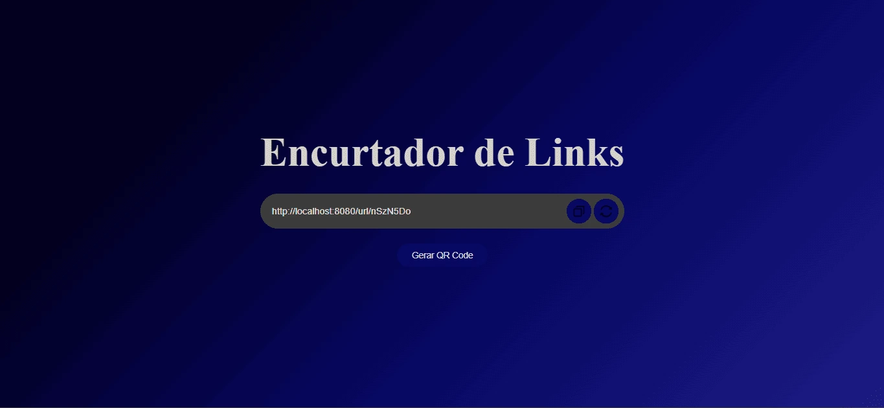
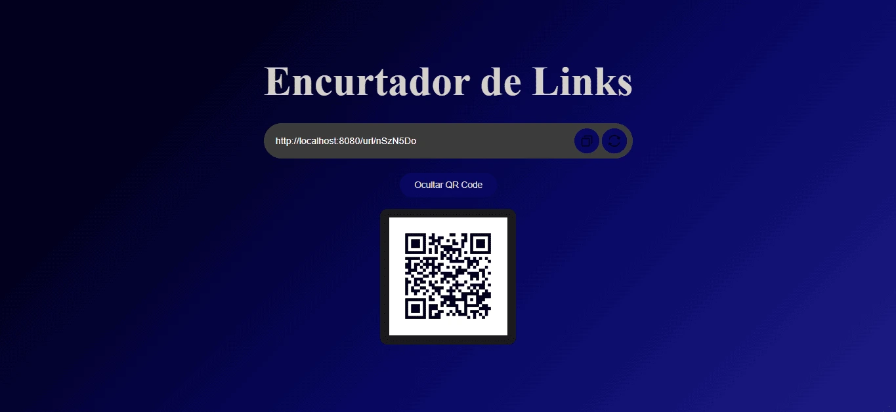

DEMOLINK SHORTENER
Uma aplicação desenvolvida para simplificar o compartilhamento de URLs através da criação de links curtos e práticos. Construído com Java e Spring Boot, o projeto utiliza uma API REST para processar solicitações, gerar identificadores únicos e disponibilizar redirecionamentos para os endereços originais.
Além do encurtamento, a aplicação oferece geração de QR Codes, permitindo transformar links encurtados em imagens que podem ser facilmente compartilhadas e acessadas por dispositivos móveis.
ABOUT_PROJECT
O sistema recebe uma URL informada pelo usuário e realiza o processamento no backend, gerando um código curto associado ao endereço original. A partir desse identificador, a aplicação disponibiliza uma URL reduzida que pode ser utilizada para acessar o redirecionamento.
O projeto também conta com um módulo de geração de QR Code utilizando a biblioteca ZXing. A imagem é produzida a partir do link encurtado, sem a necessidade de manter uma entidade ou persistir o arquivo no banco de dados.
A solução integra processamento de dados, persistência e comunicação entre frontend e backend, mantendo a aplicação organizada e com responsabilidades separadas.
TECH_STACK
- Java
- Spring Boot
- Spring Web
- MongoDB
- ZXing
- Maven
- API REST
ARCHITECTURE
- Separação de responsabilidades
- Arquitetura em camadas
- Organização de serviços
- Repository Pattern
- Comunicação REST
FEATURES
- → Encurtamento de URLs
- → Geração de códigos curtos
- → Redirecionamento para URLs originais
- → Persistência de informações no MongoDB
- → Geração de QR Codes utilizando ZXing
- → Cópia do link encurtado
DATA_FLOW
- 1. Entrada da URL (Frontend): O usuário informa o endereço original através do campo de entrada e solicita o encurtamento.
- 2. Requisição HTTP (API): O frontend envia uma requisição POST para o backend Spring Boot contendo a URL original.
- 3. Processamento (Backend): A aplicação processa a solicitação, gera um código curto e associa esse código ao endereço original.
- 4. Persistência (MongoDB): As informações necessárias para o redirecionamento são armazenadas no banco de dados.
- 5. Retorno (API): O backend retorna o código curto, permitindo que o frontend apresente o link reduzido.
- 6. Redirecionamento: Ao acessar o link curto, a aplicação recupera o endereço original e redireciona o usuário.
- 7. Geração de QR Code: Quando solicitado, o backend utiliza a biblioteca ZXing para gerar uma imagem PNG contendo o link encurtado.

FRONTEND_MODULE
A interface foi desenvolvida utilizando HTML, CSS e JavaScript, com foco em simplicidade e facilidade de utilização. O usuário pode informar uma URL, solicitar seu encurtamento e visualizar o resultado sem precisar recarregar a página.
Após o processamento, ficam disponíveis as opções de copiar o link encurtado e gerar um QR Code. O campo de entrada permanece editável e permite realizar novas solicitações tanto pelo botão quanto pela tecla Enter.
FRONTEND_STACK
- HTML5
- CSS3
- JavaScript
- Fetch API
- Web APIs
FRONTEND_FEATURES
- Interface responsiva
- Requisições assíncronas
- Manipulação do DOM
- Cópia para área de transferência
- Visualização de QR Code
- Atualização dinâmica da interface
USER_FLOW
A interação foi projetada para manter o processo direto e intuitivo, permitindo que o usuário escolha como deseja executar cada operação:
- 1. Inserção: O usuário informa a URL que deseja encurtar.
- 2. Solicitação: O usuário pressiona Enter ou clica no botão para enviar a requisição ao backend.
- 3. Resultado: O link encurtado é disponibilizado na interface após o processamento.
- 4. Compartilhamento: O usuário pode copiar o endereço reduzido ou gerar um QR Code.
- 5. Nova operação: O campo permanece editável, permitindo informar outra URL e iniciar um novo encurtamento.
BACKEND_FEATURES
- → API REST com Spring Boot
- → Processamento de requisições HTTP
- → Geração de identificadores curtos
- → Persistência com MongoDB
- → Redirecionamento de URLs
- → Geração de imagens PNG com ZXing
- → Retorno de imagens através de endpoints HTTP
GitHub
Código fonte, estrutura e implementação do encurtador de URLs.
ACCESS_REPOSITORY →